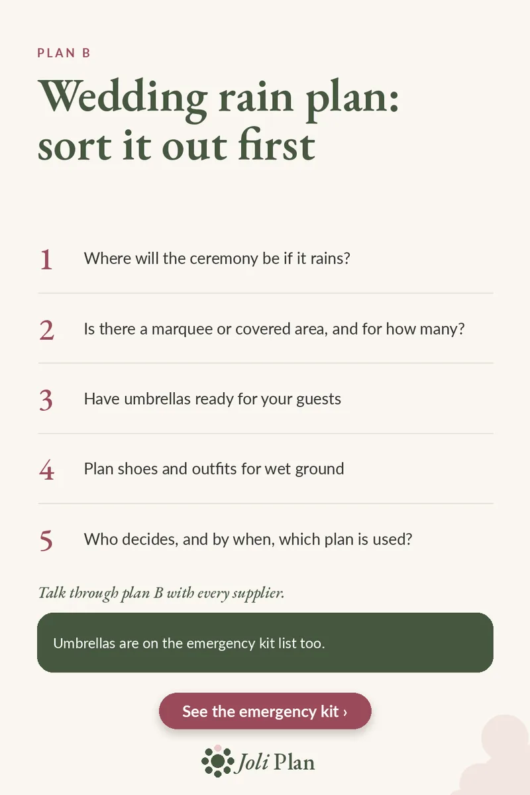

Plan B
Wedding rain plan: 5 questions to settle first
Updated on 18/11/2026
Nobody wants to think about rain on their wedding day, but a plan B takes away a lot of stress. If you settle five questions early, you will know exactly what to do on the morning. Here is the checklist to tick off.
See the wedding planner on Etsy ›

The 5 questions
- Where will the ceremony be if it rains?
- Is there a marquee or covered area, and for how many?
- Have umbrellas ready for your guests
- Plan shoes and outfits for wet ground
- Who decides, and by when, which plan is used?
Ceremony, marquee and covered area
Ask your venue where the ceremony moves to if it rains: an indoor room, a marquee or another space. Ask too whether the covered area has room for all your guests at once, because a marquee meant for only some of them does little good if everyone wants shelter at the same moment.
Check as well that the space will be free on the day, and ask who is responsible for setting it up if you need to switch plans.
Umbrellas, shoes and outfits
Umbrellas for guests are easy to buy and easy to forget. Leave them at the entrance, or ask one person to hand them out if needed. Having them ready before the day means nobody has to go looking for them in the rain.
Think about wet ground too: heels that sink into the grass or a long dress that trails over damp paths cause trouble on the day itself. Have an alternative ready and talk it through with your wedding party.
Who decides, and by when?
Agree in advance who makes the call, for example the two of you or a trusted person, and by what time. That way nobody has to debate it on the morning, and every supplier knows when to expect the answer.
Talk through plan B with every supplier
Talk through plan B with every supplier you are working with. Anyone who knows what happens if it rains can prepare in good time, and nobody is caught out on the morning.
Umbrellas are on the emergency kit list too.
Frequently asked questions
What should I settle for a wedding rain plan?
Where the ceremony will be if it rains, whether there is a marquee or covered area and for how many, umbrellas for guests, shoes and outfits for wet ground, and who decides which plan is used.
Who should I talk to about plan B?
Every supplier, for example the venue, photographer, DJ, florist and caterer.